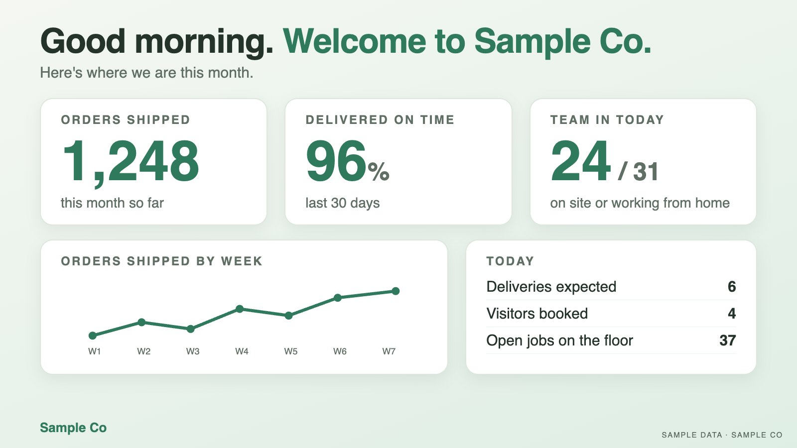
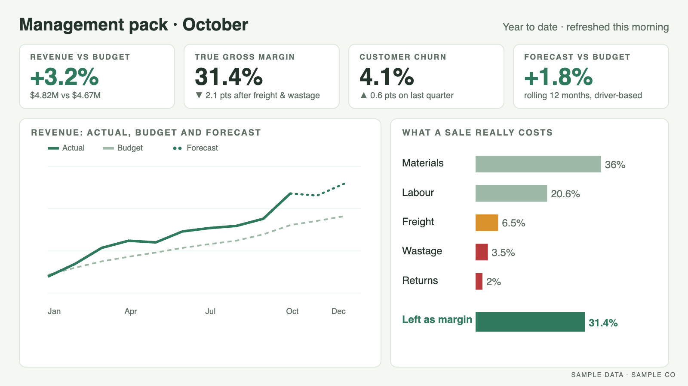
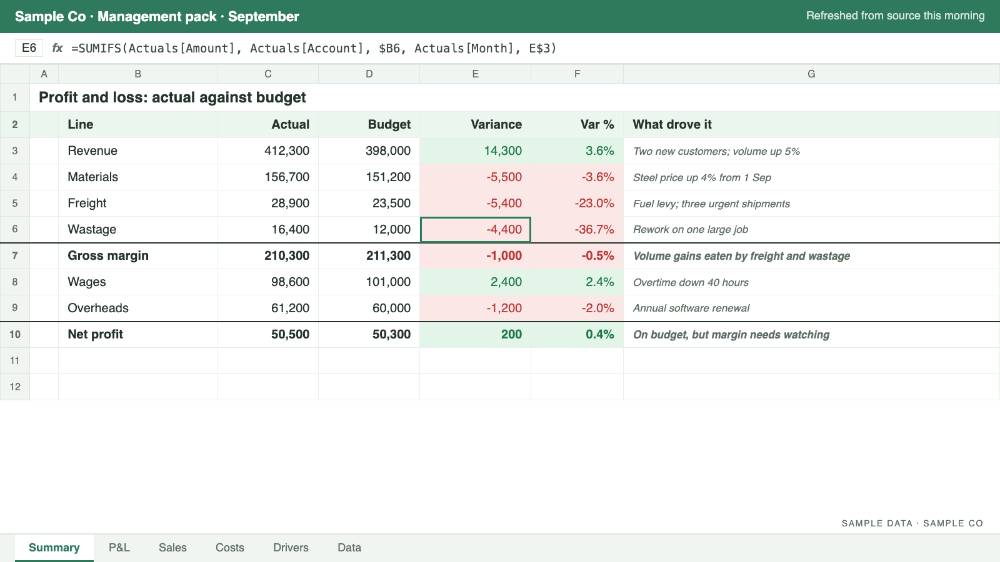
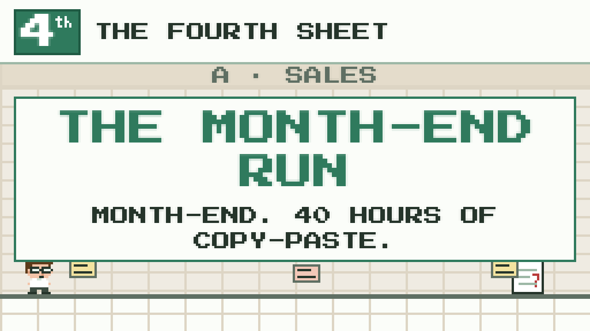

Examples
What the reporting looks like.
Examples built on sample data: live screens, reports, templates and a deliveries map. For the questions SMEs and not-for-profits ask, see the SME and not-for-profit example reports.
Example: live dashboards
The same data, on the right screen for the room.
Designs for live data displays for the warehouse floor, reception and the boardroom. Each one shows what that audience needs, and updates from the same source.





Sample data. Click or tap an image to enlarge it.
Designs made with HTML and CSS, rendered to images with Python
Example: reports
Reports built around the questions you ask.
Each report answers one plain question, on sample data. Pick a period, tap any number for its workings, and export it to Excel, PDF or PowerPoint.
- SMEs
Which jobs actually make money?
Jobs made a 36.1% gross margin in September: maintenance contracts the most (59.5%), installations the least (27.0%).
Open the report → - SMEs
Which products and services are growing?
Year to date, trades revenue is up 26.5% and services up 77.1% on the same period last year.
Open the report → - Not-for-profits
What does each program really cost?
Housing support costs $54,094 in full in September: $22,894 more than its grant spending, once its share of shared costs is added.
Open the report → - Not-for-profits
How many months of runway do we have?
2.0 months of spending in unrestricted cash, against a 3.0 months reserves target.
Open the report →
Charts made with HTML, CSS and JavaScript, coded by hand · numbers prepared in Python
Example: templates
Templates your team can run themselves.
A management pack workbook: actuals against budget, the variances explained, the assumptions in one place. It updates itself from your other systems, so month-end is a refresh, not a rebuild.
- Month-end management packs
- Budgets and forecasts built on drivers
- Job, product and customer costing workbooks


Example: deliveries on a map
See which deliveries are late today, not at month-end.
Every delivery out to a customer and in from a supplier, on a map and coloured by how late it is. Switch to the last 7 or 30 days and the problem runs stand out.
Tools I work in
Technology agnostic: I work with what you already have.
Reporting and dashboards
- Excel
- Power BI
- Google Sheets
- Datawrapper
Data and automation
- Power Query
- Power Automate
- Azure
- SQL
- Python
- R
ERP, CRM and payroll
- QAD
- TechnologyOne
- Salesforce
- Elite 3E (legal)
- Employment Hero
AI
- Claude

Take a break
Play the month-end run.
Thirty seconds: month-end by hand, then the same month once the reporting is built.
Contact
The fourth sheet, without the full-time hire.
For SMEs and not-for-profits that want what a seasoned finance professional does, without hiring one. No new systems and no major IT project: I work from the spreadsheets and systems you already have. Book a free 20-minute numbers check and I'll tell you what's possible.
Prefer email or LinkedIn? Email TBC LinkedIn TBC